01The idea
BEAST (a Bayesian estimator of abrupt change, seasonal change and trend; Zhao et al. 2019) writes a series as a trend made of straight segments, plus a season made of harmonic segments, plus noise. A model is a choice of where each component changes, and how many times.
Instead of testing for breaks, BEAST runs a Markov chain (reversible-jump MCMC) through the models. At each step it adds, removes or moves a changepoint, and keeps the new model in proportion to how much better it fits. A model with one more changepoint must fit enough better to be kept, so there is no threshold to set. After a few thousand steps, the models the chain has visited say how likely each answer is:
- Probability of a changepoint
- At each date, the share of the sampled models with a changepoint there.
- Changepoints
- The most probable ones, listed with their probability (summed over the dates around each peak) and the jump of the trend there.
- Number of changepoints
- The mean over the models, and the probability of 0, 1, 2... of them.
- Trend
- The average of the models' trends, with its 95% interval: narrow where the models agree, wide where they do not.
It is a slower kind of tool: a Markov chain per pixel, a few hundredths of a second for an annual series and about a second for a long 16-day one.
02The example
The series of the LandTrendr guide: one Landsat NDVI value per year from 1985 to 2024 (× 10,000), over about 50 km of a forest frontier in Rondônia, Brazil. It opens as a VRT of 40 bands named yr1985 to yr2024, with 0 as no data. Later, for a series with seasons, the 16-day MODIS EVI of the BFAST guide.

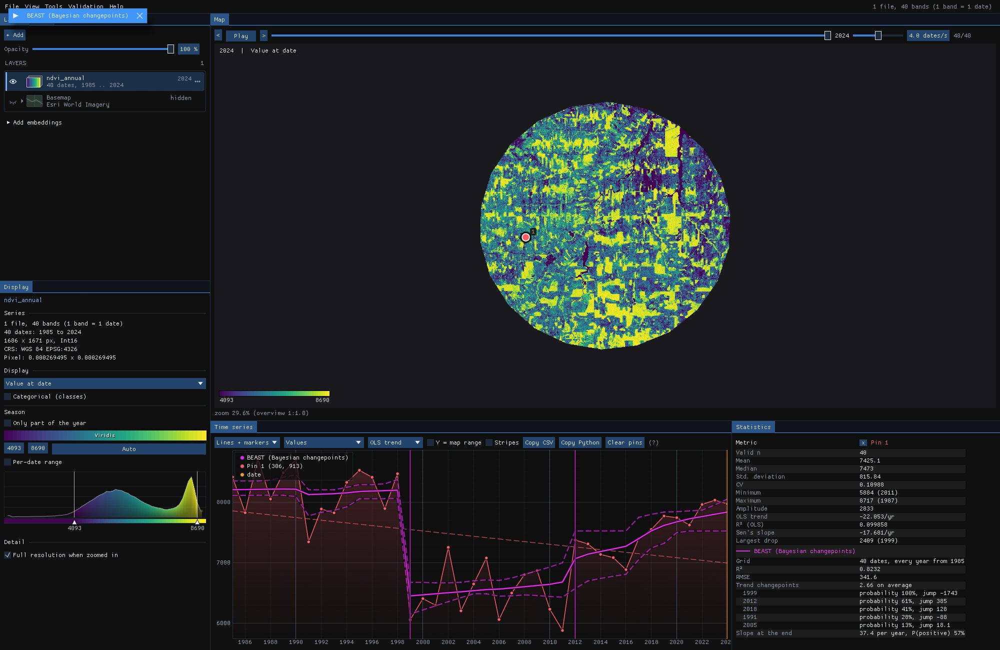
03Opening the tool
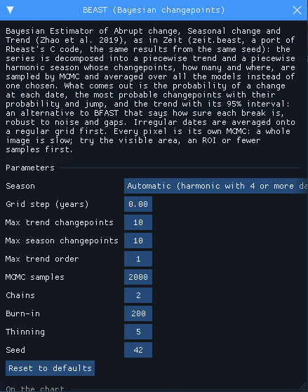
Tools → BEAST (Bayesian changepoints), among the change detection tools. It takes any series of one band with at least 12 dates. It comes from Zeit (zeit.beast, a port of the C code of the R package Rbeast) and is built into Janus, so there is nothing to install.
Season is automatic: a harmonic season of one year when the series has dates and four or more a year, none for an annual series like this one. The tool runs 2000 samples on 2 chains, a quarter of Rbeast's default (8000 on 3): enough for the probabilities, and four to five times faster on an image.
04A clearing, and a maybe
With the tool open, BEAST runs on every series the chart shows: the cursor, the pins and the ROI. Over each it draws the trend (or the fit, trend plus season, when there is a season) with its 95% interval dashed, and a vertical line at each trend changepoint more likely than not. The numbers go to the Statistics table.

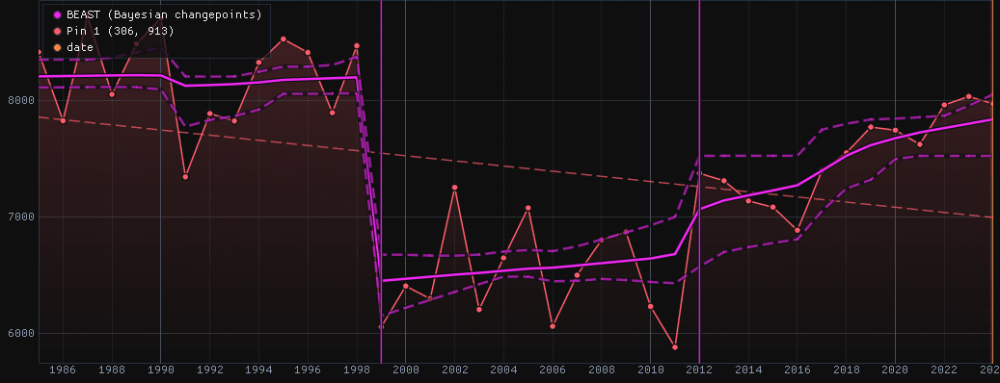

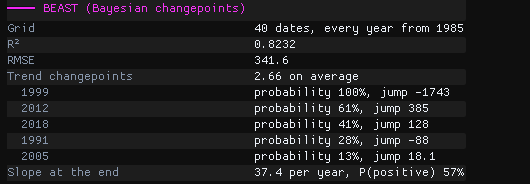
In 1999 the NDVI fell from 0.85 to 0.61: a clearing. Every sampled model has a changepoint there (100%), and the trend drops by 1743 (0.17 NDVI). In 2012 the NDVI rose from 0.59 to 0.74 and stayed higher: 61% of the models put a changepoint there, the others explain the rise with a steeper slope. That is why the 95% interval is wide around 2012. 2018, 1991 and 2005 are each in a minority of the models (41% down to 13%), so the chart draws no line for them.
The trend has 2.66 changepoints on average. Two is the most likely number, three almost as likely. At the end, the trend rises by 37 a year, and 57% of the models have it rising: the regrowth is more likely than not still going on.
LandTrendr on this pixel draws one model: the clearing, then a single line of regrowth from 1999 to 2024, across the step of 2012. BEAST shows the clearing as certain and the step as a fair possibility.
05No change
A second pin, 2 km to the south-west (pixel 250, 966), on a forest:

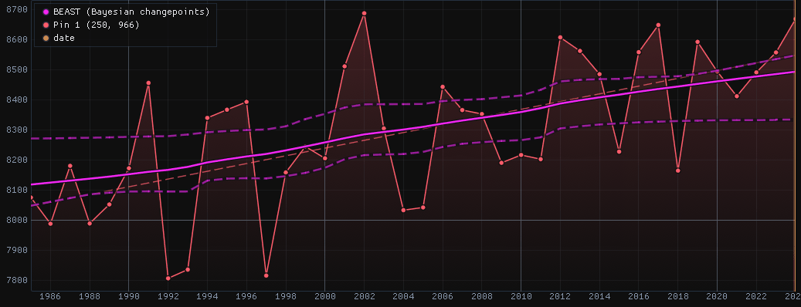

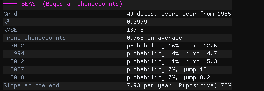
The NDVI zigzags from year to year, but no changepoint reaches 16%, and zero changepoints is the most likely answer. BEAST does not claim a change it cannot see. The R² is low, 0.40, and that is right too: once the slow rise is drawn, little but noise is left to explain.
Read the probability with the date
The table always lists the most probable changepoints, even when none is likely. A date alone says little: a changepoint at 16% is a date most models do without. Use 0.5 (more likely than not) to call a change, and keep the probability with the map.
06A series with seasons
With several dates a year, BEAST fits a season too, with changepoints of its own. Here is pin 1 of the BFAST guide: MODIS EVI every 16 days from 2001 to 2025, a field of western France. Season stays automatic (harmonic, 23 dates a year), and Grid step is set to 1/23 = 0.0435: MODIS dates are 16 days apart within a year but closer across the new year, so the series is not quite regular, and with 0 BEAST would average it onto a half-month grid instead.

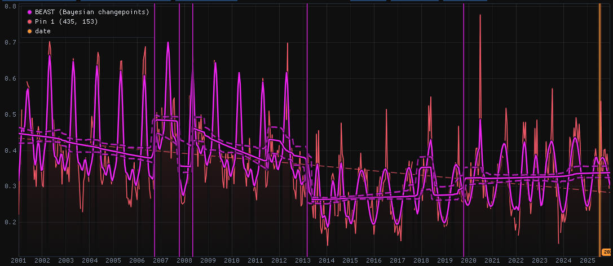

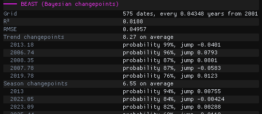
Until 2012 the field has a sharp peak each spring; from 2013 its level is lower and its season a gentler wave. BEAST splits that change between its components: the trend drops by 0.04 in March 2013 (2013.18, 99%), and the season changes at the start of 2013 (94%). BFAST on this pin finds two trend breaks, September 2006 and April 2013: BEAST has both, at 96% and 99%.
The trend also steps up and down in 2006–2008 (87% to 96%): the whole of 2007 sits higher than the years around it, as a field that changes crops can do, and with up to 10 changepoints allowed the trend takes it. On crop land, lower Max trend changepoints when such steps are not what you look for. In Zeit, with at most 3, only the drop of 2013 stays above 50%.
A season needs dates all year
With Landsat in the Amazon there are clear images only in the dry season, and little to fit a season on: a clearing can then be read as a change of the season rather than of the trend. For such series, use one value a year (Season none), or S-CCD and CCDC on every observation.
07The parameters
| Parameter | Default | What it does |
|---|---|---|
| Season | auto | Harmonic (a season of one year) when the series has dates and four or more a year; none for annual series. |
| Grid step (years) | 0 | BEAST works on a regular grid; irregular dates are averaged onto it. 0 lets it choose, as Rbeast: a regular series keeps its own step, otherwise the nearest of a day, half a month, a month and a week. Set 1/23 = 0.0435 for 16-day composites, 1/12 for monthly, 1 for annual. |
| Max trend changepoints | 10 | The most changepoints the trend may have. It is part of the prior: lower it when a series changes rarely. |
| Max season changepoints | 10 | The same for the season. |
| Max trend order | 1 | 1: flat or sloping segments; 2: curves too; 0: flat only. |
| MCMC samples, Chains | 2000, 2 | Samples kept per chain, and chains averaged. More are steadier and take longer in proportion; Rbeast's defaults are 8000 and 3. |
| Burn-in, Thinning | 200, 5 | Steps left out at the start of each chain, and one sample kept every this many. |
| Seed | 42 | The same seed gives the same result, in Janus, in Zeit and in Rbeast. |
08Running it on the image
Under Run on the raster, choose the Whole image, the Visible area or the ROI, then Run. Every pixel is its own Markov chain, so start with a window: this guide runs a 300 × 300 pixel ROI (9 × 9 km) around both pins.
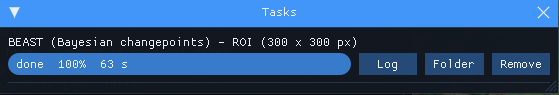
63 s on every core of a 20-thread laptop, with Janus taken out of Windows' power throttling; launched from a terminal and left in the background, Windows slowed the same run to more than twice that. The whole 1686 × 1671 image would take about half an hour. The run happens in the background and the map stays usable meanwhile.
The outputs are GeoTIFFs, saved by default in %LOCALAPPDATA%\Janus\results next to the run's job.json and job.log. They open over the map as layers of their own in the Layers panel. They are the same numbers as Zeit's: zeit.beast with the same parameters on the same window gives every pixel of every map to the last bit. The maps below are drawn over the Esri imagery, with the series dimmed to 25%.
09The maps
| Map | Meaning |
|---|---|
| Trend changepoints (mean) | The number of trend changepoints, averaged over the models. |
| Most probable trend changepoint | Its date, as a decimal year: for an annual series, the first year of the new segment. |
| Its probability | How many of the models have it. |
| Its jump | The jump of the trend there, in the units of the series. |
| Season changepoints (mean) | The same for the season; empty for an annual series, which has none. |
| R² of the fit | How much of the series the model explains. |

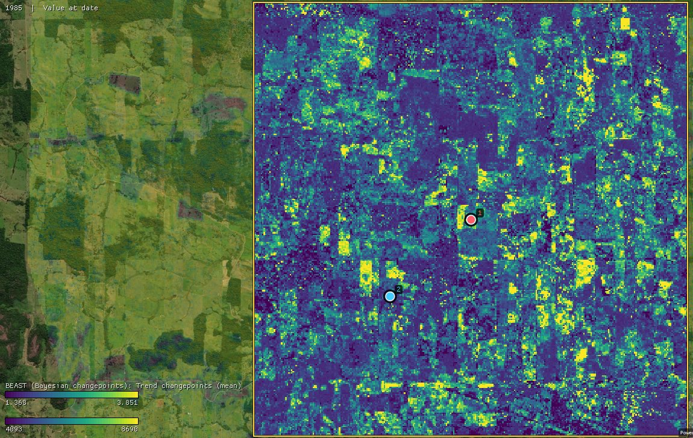

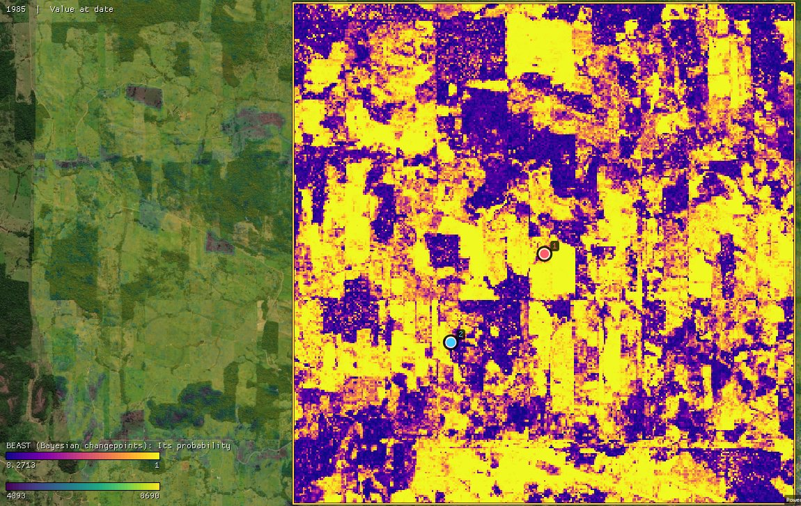
Over the ROI the median pixel has 2.0 changepoints on average. The probability map is the one to read first: 67% of the pixels have a changepoint more likely than not, and 39% one above 90%, whole fields at once. The purple ones, like pin 2's forest, have no change BEAST will vouch for.

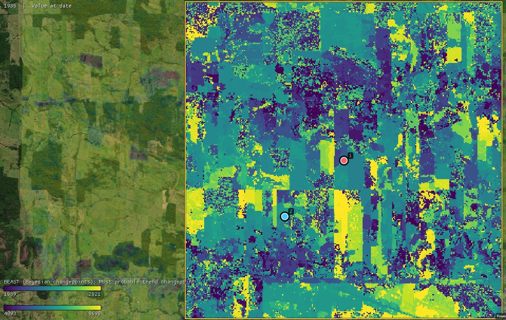

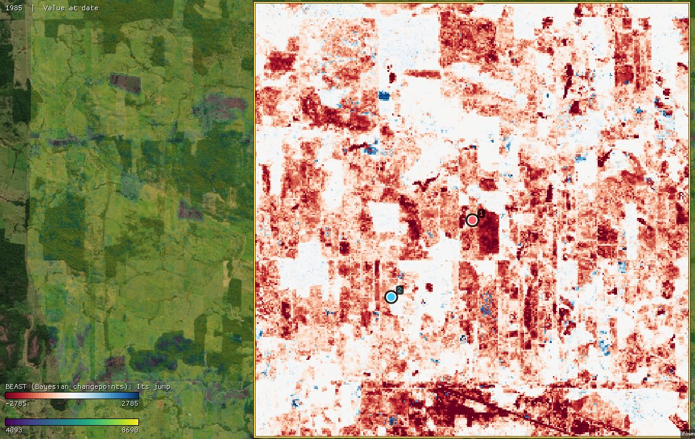
The dates follow the fields: each was cleared in one year, and 2004, 2006 and 2003 hold the most (8.5%, 7.8% and 6.2% of the ROI, among the changepoints above 50%). 93% of those changepoints are drops, a median of 0.1 NDVI: this frontier's history is one of clearings. Rises are rare and small.
- The date and the jump maps are not masked. Every pixel has a most probable changepoint, even one at 15%. Read them with the probability map, or keep the dates where it is above 0.5 with a mask.
- White is no change. The jump's colours are RdBu, and its automatic range is symmetric about zero: here from −2785 to 2785. To see the small jumps, narrow it in the layer's settings (its arrow in the Layers panel), to −1000 and 1000 for example; keep the two ends opposite so that white stays at zero.

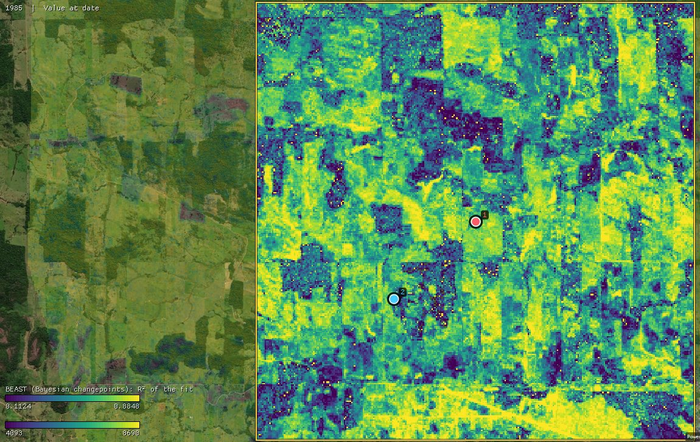
The R² is high where something happened (a clearing leaves a lot for the trend to explain) and low over forest, where the NDVI only moves with noise. A low R² is not a bad fit there. Hover the map with any of these layers on top: the chart keeps the pixel's series with BEAST's trend, to check a colour against what the series did.
10BEAST or the others
- LandTrendr draws one straight-segment model of an annual series, fast, with recovery after each loss. On this ROI the two agree on the year of a fast loss: of LandTrendr's one-year losses, 70% have a BEAST drop (above 50%, 0.1 NDVI or more) within a year, 81% of those over 0.3 NDVI. They disagree on slow ones: a decline over five years or more is a vertex for LandTrendr but a slope for BEAST, which only 6% of the time puts a changepoint there.
- BFAST and BFAST Lite choose the best model of the breaks of a regular series, with a test, in a fraction of the time. BEAST gives the same kind of answer with its probability, and takes irregular dates.
- Speed. BEAST is the slowest of the change detection tools: a few hundredths of a second for an annual pixel, about a second for 25 years of 16-day data. On one series, Zeit's port is as fast as Rbeast's generic code (Rbeast's AVX2 code is about a third faster); on a cube of pixels, it is 1.5 to 1.9 times faster than Rbeast's
beast123().
The algorithm is Rbeast's own: Zeit ports its C code, with its random numbers and its arithmetic, and from the same seed returns the same numbers as Rbeast's beast() with its generic kernels, to the last bit. That is checked on six series in Zeit's tests, and holds on the pins of this guide.
11What next
- Other ways to date a change: LandTrendr and its recovery metrics for annual series, BFAST for regular series, CCDC and S-CCD on every observation.
- Compare it. Tools → Agreement of change maps takes several maps of dates (BEAST's most probable changepoint, LandTrendr's year of detection) and maps where and when they agree.
- Validate it. The changepoint dates make a map of events. The Validation guide shows how to sample it and estimate its accuracy and areas.
- Script it. The same algorithm is
zeit.beastin Python; Zeit's BEAST tutorial follows the same pixels, with every output (the probability of each number of changepoints, the season's changepoints, the slope's sign).
12References
- Zhao, K., Wulder, M. A., Hu, T., Bright, R., Wu, Q., Qin, H., Li, Y., Toman, E., Mallick, B., Zhang, X., Brown, M. (2019). Detecting change-point, trend, and seasonality in satellite time series data to track abrupt changes and nonlinear dynamics: A Bayesian ensemble algorithm. Remote Sensing of Environment, 232, 111181.
- Green, P. J. (1995). Reversible jump Markov chain Monte Carlo computation and Bayesian model determination. Biometrika, 82, 711–732.
- Rbeast: the authors' R, Python and MATLAB package.
- Zeit: the change detection library behind the tools of Janus.